Each row is one detection, marked with a red crosshair.
The Sentinel-2 pair is your evidence of change. It is only 10 m per pixel and looks blurry, but its two dates match the detection window exactly. The sub-metre image is far sharper but undated, so it answers only what is this place — plantation rows, quarry, riverbed, settlement — not whether anything changed.
Sub-metre dated imagery was attempted via Esri Wayback and is not available here: both the 2025 and 2026 releases return the same acquisition, because Esri has not re-flown this area between them. Showing them as a before/after pair would invite the conclusion that nothing changed, which the imagery cannot support either way, so only one copy is shown and it is labelled undated.
The commonest false positive: a bare patch that was
already there in the before image. If the crosshair sits on ground bare
in both Sentinel-2 chips, that is a false_positive however obvious
the patch looks. Also watch for plantations — regular rows or sharp
rectangular blocks in the sharp image — which are not forest loss.
The commonest false positive here: a bare patch that was
already there in the before image. If the crosshair sits on ground that
was bare in both years, that is a false_positive however obvious the
patch looks. Also watch for plantations — unnaturally regular rows or sharp
rectangular blocks — which are not forest loss.
Record true_positive, false_positive
or unclear against each id in the worksheet CSV. Use
unclear freely — it is excluded from the score, and guessing
corrupts the number you are trying to measure.
13 of 13 have both dated chips.
0b99c714fdef47cf
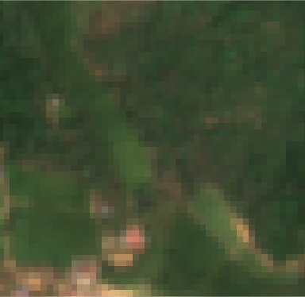
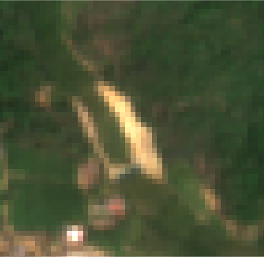
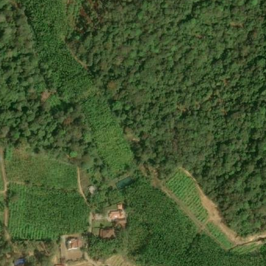
1c1e39f9d1cad868
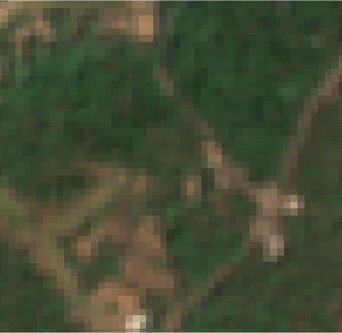
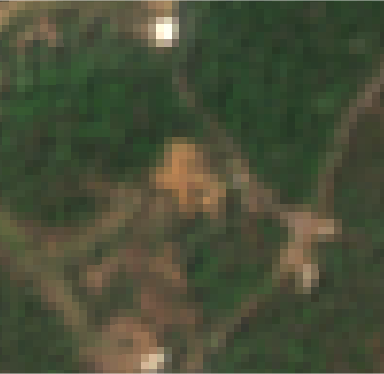
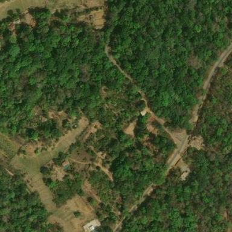
3aad293b1f7961ed
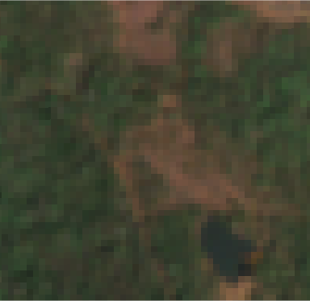
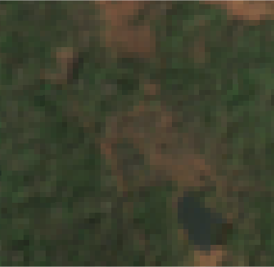
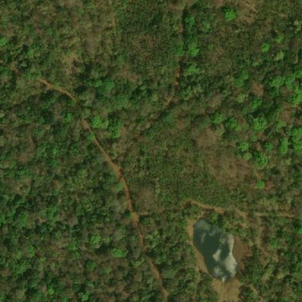
51866b265fb6837f
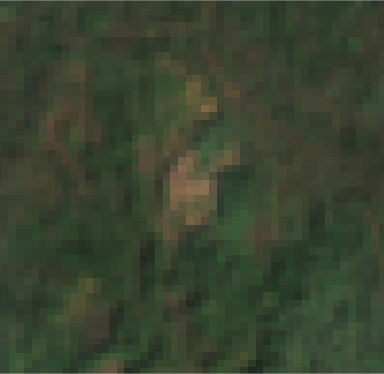
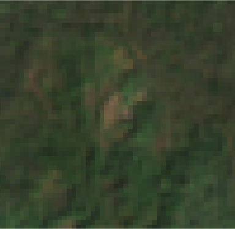
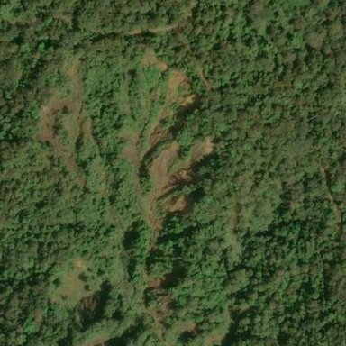
51d6292e89048000
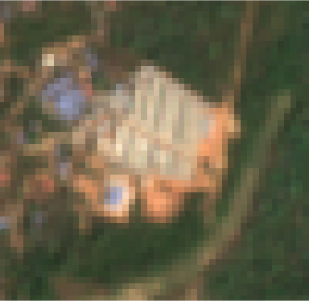
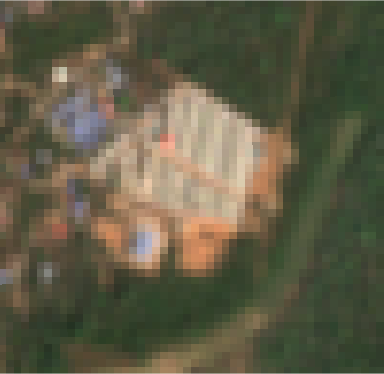
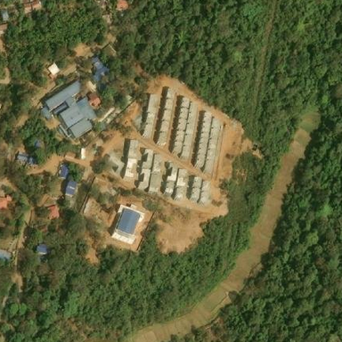
6c433d9a6d81bc1b
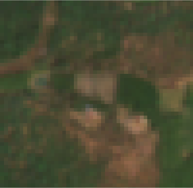
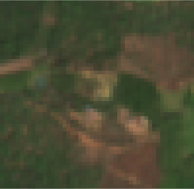
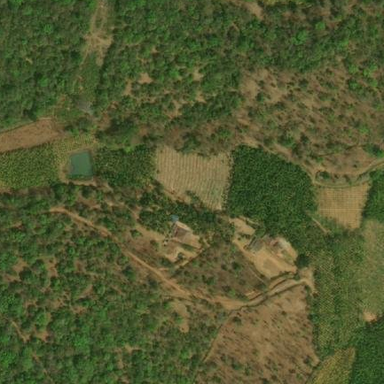
7081a27932b2236e
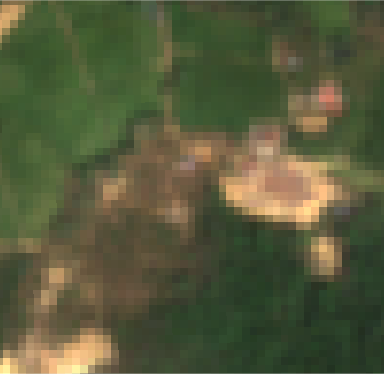
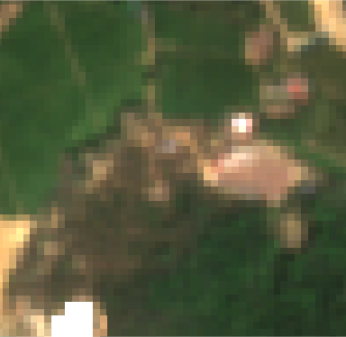
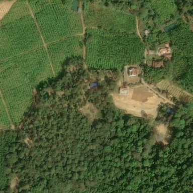
828392510999739a
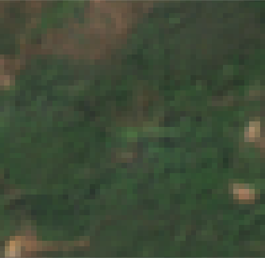
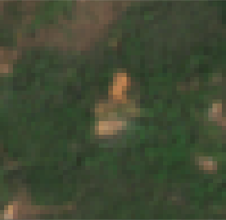
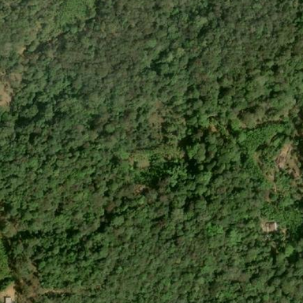
8eee4438c00586fe
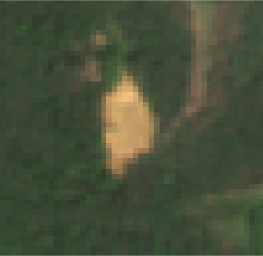
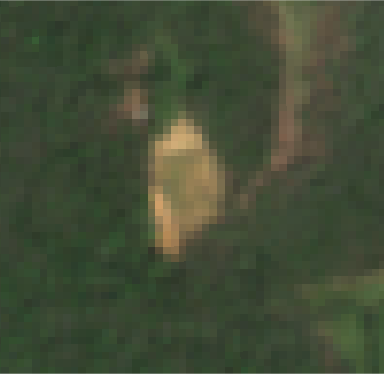
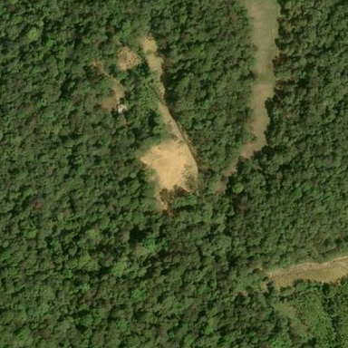
93ab2a6ac93d21b8
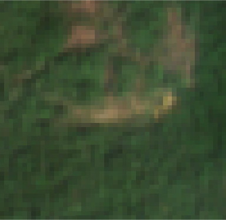
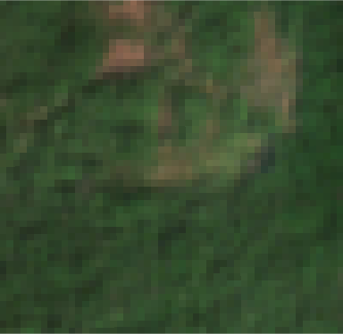
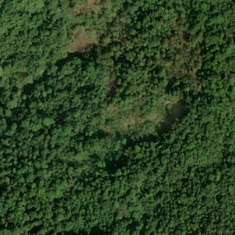
b0f3a3b13e55c1e5
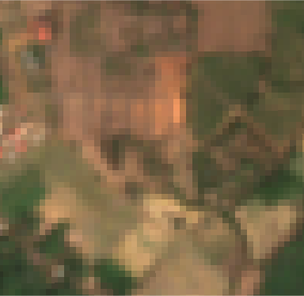
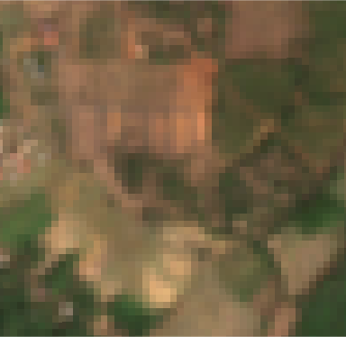
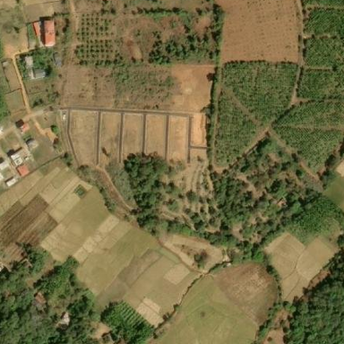
b64eec4c9c681dc0
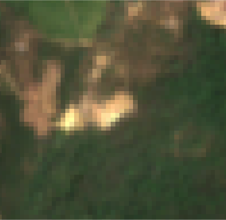
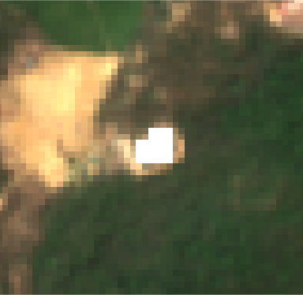
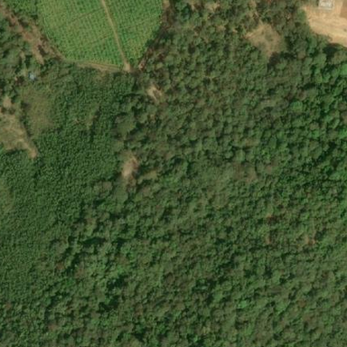
ea0c4f927051404a
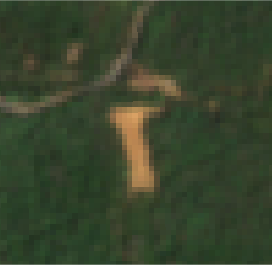
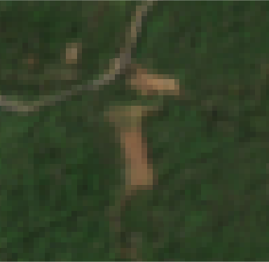
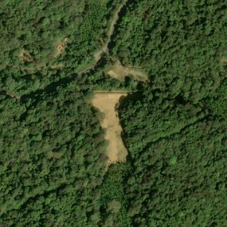